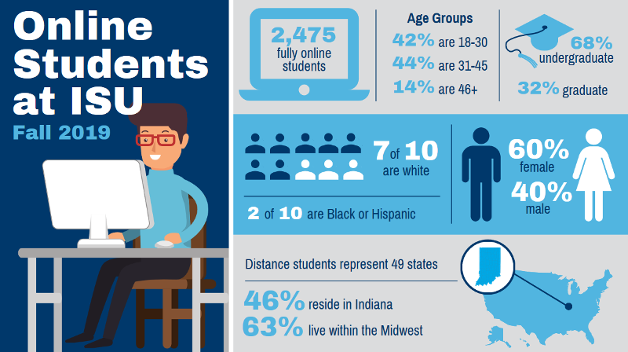
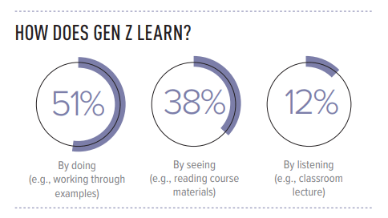

Online Teaching Certificate Program
Knowing & Understanding Your Online Learners
Who are our online learners?
As you have already learned, there were 5,533 students who took at least one online course at ISU during Fall 2019. However, 2,475 students took all of their courses online. A total of 42% of the distance students are between the ages of 18-30, about half of them are between 31-45, and rest are older than 45. Almost 70% of the fully online students were enrolled in undergraduate courses while the remaining 30% were graduate students. This pattern remains true during the current semester.

Our institution welcomes both traditional high school students as well as adult learners who represent multiple age ranges. While most online students are undergraduates, a significant number of graduate students attend ISU. Additionally, besides serving black and low-socioeconomic status students, ISU also concentrates efforts to educate Hispanics and international students. In fact, increasing the number of Hispanic students at ISU is part of our strategic goals.
The characteristics of the undergraduate student population is changing over time. Not only do the traits of the youngest students shift with each generation, today's adult learners also represent different needs and learning preferences. Today's learners juggle education with work, immediate family commitments, and aging parent care. Some learners hold multiple jobs, work 24-hr shifts, raise children, possess various work experiences, and use technology at differing levels.
Therefore, adult learners require flexible options to meet their unique needs. Besides, learners with disabilities, international students, and Hispanics each have unique learning inclinations. This lesson describes each of these groups and lists practical tips for you to adjust your instructional methods as necessary to create student success for these online learners. While these online students take at least one online course, they may also take your campus-based courses. Facilitating their growth in either environment is a success for the institution, students, and other stakeholders.
The next few pages of this lesson detail the traits of the three relevant generations (Gen X, Y, and Z) before moving on to Hispanics, international, and lastly disabled population.
Inforgraphics credits is given to Katie Reed
Generation X
 This generation is also called Gen X'ers, Post-Boomers, and Baby Busters.1 They were born between approximately 1965 and 19802. They came of age in the midst of skyrocketing divorce rates in the U.S., a new trend of both parents working, and the birth of personal computing and personal technology devices, such as the Commodore64, Atari, and Walkman. Therefore, most of them are comfortable with computers, smartphones, tablets, and other technologies.
This generation is also called Gen X'ers, Post-Boomers, and Baby Busters.1 They were born between approximately 1965 and 19802. They came of age in the midst of skyrocketing divorce rates in the U.S., a new trend of both parents working, and the birth of personal computing and personal technology devices, such as the Commodore64, Atari, and Walkman. Therefore, most of them are comfortable with computers, smartphones, tablets, and other technologies.
Gen Xers are defined as geeks, independent thinkers, and artists who tend to be fast-paced, engaging in interesting work, and productive as they love their personal time and enjoy working on individual or self-directed ventures.1 Gen Xers value work/life balance, appreciate fun in the workplace, and embrace a work hard/play hard mentality. They adapt well to change and are resourceful.1
Traits of Gen Xers
Here is a short video that explains the traits of Gen Xers.
- Independent and self-reliant (Sometimes referred to as "latch-key kids")2
- Entrepreneurial thinkers2
- Resourceful problem solvers2
- Defy authority and micromanagers2
- Loyal to individuals, not organizations
- Driven by reality (How will a course or degree help them in the real world?)
- Have a distaste for "touchy-feely" teaching methods
- Competent with technology but prefer communications via email and phone2
- Value freedom as the best reward because they want to balance work and life2
Learning Preferences
- Engage in direct/immediate communication (emails and phones)2
- Avoid micromanaging them2
- Connect assignments to real world situations2
- Provide an opportunity for individual work2
- Prefer analyzing case studies that are related to their areas of specialties2
Practical Tips
- Get to the point and provide clear instructions for assignments and activities2
- Challenge their cognitive domain versus tasking them with emotion-focused assignments
- Embed cases and real-world scenarios in the lecture
- Add brief opportunities for students to reflect on learning
- Connect assignments to real world situations
- Provide opportunities for individual work
- Explain the rationale and benefits of group work prior to assigning such activities
- Incorporate technology when possible2
- Use games and case studies2
Throughout this lesson, you will encounter Self-Check Questions like the one below. These will help you determine your ability to meet the stated objectives of the lesson. You must earn 85% of the possible points in order to successfully complete this lesson.
1 Betz, C. L. (2019). Generations X, Y, and Z. Journal of Pediatric Nursing, 44, A7-A8.
2 Griggs, J. (n.d.). Generational learning styles (Generation X and Y). Florida Institute of Technology. Retrieved from https://intra.cbcs.usf.edu/common/file/HireABull/Generational%20Learning%20Styles%20Handout.pdf
Image: "Generation X" is courtesy of ISU Photographic Services
Generation Y
You may also know them as Millennials, Generation We, Internet Generation, or Leave No One Behind.1,3,5 They were born between approximately 1981 and mid 1990s up to 2000.1
|
Who are Cuspers?
|
|
If you were born near the end of one generation and at the beginning of the next, and you feel that you have a mix of characteristics of both adjacent generations but don't resemble the typical traits of the middle of the adjacent generations, you might be a Cusper. 6
|
A Cusper may live between any of the two generations. According to some sources, one specific example of a Cusper generation is a microgeneration living between Gen X and Gen Y called Xennials. Xennials, typically born in the late 1970s to early 1980s, had an analog childhood but digital adulthood. The Cusper microgeneration between Millennials and Gen Z are referred to as Zennials or Zillennials by some sources.
Being a Cusper may present its advantages because you may be empathetic to both adjacent generations.

Traits of Millennials
- Use technology throughout the day to remain connected to the world and one another1,2,3,4
- Have short attention span; get easily distracted by social media and notifications
- Focus more on materialistic values than the larger community
- The most curious generation (although Gen Z also prefers continuous learning)4
- Expect immediate feedback to know that they are on the right track3,4
- Prefer transparency and two-way feedback; opinionated and may question authority3,4
- Are highly visual learners who also like humor3
- Tend to be optimist; and support various causes4
- Do not like to sacrifice their personal life; their motto is to "work hard and play hard" 4
- Are more open-minded, and more supportive of gay rights and equal rights for minorities than previous generations.
- Are confident, optimistic, and receptive to new ideas5
Learning Preferences
Let us start the learning preferences of Millennials with a short video.
- "Millennials are extremely team-oriented and enjoy collaborating and building friendships with colleagues" 4
- Gen Y likes to communicate through texting and social media 3
- They like customizing the course to fit their preferences (such as selecting a project, topic, platform, etc.) 3
- Need to feel involved; even through volunteer projects
- Need to hear rationale behind instructions 7
- Desire warm, empathetic atmosphere in which they can connect with the instructor 7
- Expect the instructor to provide a very engaging, structured environment 3
- Are bored with lectures; they prefer summarized content instead of overloading them with vast amount of knowledge
- Prefer learning by using multimedia, games, simulations, digital tools, podcasts, concept maps, short videos, and infographics as they are visual learners and tech-savvy 3
Practical Tips
- Provide clear objectives, standards, due dates, assignment instructions, and evaluation criteria
- Encourage research-based learning; ask them to create digital materials that they prefer (podcasts, videos, concept maps, infographics, mnemonics, etc.)
- Connect assignments to current and future jobs to make them relevant
- Incorporate social media and technology in assignments or activities (even as resource sites)
- Infuse multimedia, games, simulations, podcasts, infographics, and other digital tools throughout the course
- Provide feedback quickly or incorporate peer-feedback opportunities
- Recognize and note their accomplishments in feedback and via announcements
- Incorporate experiential learning, service learning, and collaborative group projects in the curriculum
- Use one due date per week for all assignments (to meet their flexibility needs)
- Establish multiple small-group discussions and activities in face-to-face and online classrooms and participate in these discussions
- Start conversations on social media that will engage your audience; ask them to contribute quality posts
- Develop their critical thinking and problem-solving skills, and ask them to reflect on their learning/thinking process (metacognitive skills) through journaling
- Teach them library literacy skills and citations
Please complete the activity to gauge your understanding.
1 Betz, C. L. (2019). Generations X, Y, and Z. Journal of Pediatric Nursing, 44, A7-A8.
2 Wiedmer, T. (2015). Generations do differ: Best practices in leading Traditionalists, Boomers, and Generations X, Y, and Z. Delta Kappa Gamma Bulletin, 82(1), 51-58.
3 Griggs, J. (n.d.). Generational learning styles (Generation X and Y). Florida Institute of Technology. Retrieved from https://intra.cbcs.usf.edu/common/file/HireABull/Generational%20Learning%20Styles%20Handout.pdf
4 Abbot, L. (2019, May 8). 11 Millennials' traits you should know about before you hire them. LinkedIn. Retrieved from https://business.linkedin.com/talent-solutions/blog/2013/12/8-millennials-traits-you-should-know-about-before-you-hire-them
5 Twenge, J. M. (2017). iGen: Why today's super-connected kids are growing up less rebellious, more tolerant, less happy—and completely unprepared for adulthood. NewYork, NY: Atria Books.
6 Kennedy MM. (1999). Generations: when boomers meet cuspers, busters and netsters. Point of View, 37(3), 5–7.
7 Price, C. (2009). Why don't my students think I'm groovy? The Teaching Professor, 23 (1), 7.
Image: Millennials by Fond Technologies is under Fair Use
Generation Z
 This generation is also known as iGen, Centennials, and Digital Natives. 1 Generation Z starts with those born from approximately 1996 (or 2000) to about 2015. 1 Gen Z is the fastest emerging generation of employees, consumers, and trendsetters who often multitask using technology while simultaneously being involved with other activities.
This generation is also known as iGen, Centennials, and Digital Natives. 1 Generation Z starts with those born from approximately 1996 (or 2000) to about 2015. 1 Gen Z is the fastest emerging generation of employees, consumers, and trendsetters who often multitask using technology while simultaneously being involved with other activities.
Gen Z's social skills are changing (or missing) due to emerging technologies. Gen Z's culture is becoming more relational through the use of social media; they are continuously "connected" to the virtual world with their smartphones and talk to each other with emojis, icons and gifs on social media instead of talking on the phone or writing emails. 4 They consume a lot of information in a short amount of time if presented in a digital format. Also, they are sensitive to social events, the environment, technological developments, economy, social injustice and inequality. 4
Traits of Gen Z

- More tech-savvy than any previous generation 3
- Competitive, entrepreneurial, trustworthy, tolerant and less motivated by money (than Gen Y) 3
- Innovative and are adaptive to tech-empowered learning 2
- Ethnically more diverse than any previous generation 3
- Fast-paced in processing information and materials and do not hesitate to ask questions 3
- Prefer learning that is meaningful; their work ethic is more realistic than what Gen Y represents 4
- Tactile learners with shorter attention span 1
Below is a short video about the difference between Millennials and Generation Z learners.
Learning Preferences
- Learning is an active experience for them; this generation is "accustomed to rapid diffusion of information presented in a graphically and technologically sophisticated style" 1
- Most of them prefer working independently because they can work at their own fast pace instead of waiting on someone (but working in teams collaborating on projects is not out of their comfort zone)2
- They rely on online resources; prefer digital technologies and activities that present multi-modal learning experiences 4
- Self-directed of what and how learning occurs; they learn best when they can have an input about what their learning experience is 2,3
- They create or co-create things that they can share 2,4
- Gen Z can manage collaborative learning with social, cross functional, and external partners 2
- They desire practical learning focused on solving real world issues while the instructor addresses questions just in time 2
Practical Tips
- Create frequent dialogue and engagement where activities go beyond traditional knowledge sharing 2
- Develop relevant learning experiences that utilizes technology 2
- Use in-class session as learning labs 2
- Invite subject matter experts, trainers, and other professionals to create high impact learning 2
- Prompt them to co-create content with other learners 2
- Utilize peer coaching, microlearning, videos, social sharing, action mapping, problem-based learning, on-demand content, storytelling, gamification, and guided self-reflection activities 2
- Teach them library literacy skills and citations
It's time again to check your understanding!
Here is one more activity to to test your knowledge on all three generations!
1 Betz, C. L. (2019). Generations X, Y, and Z. Journal of Pediatric Nursing, 44, A7-A8.
2 Kovary, G. (2019, October). The Gen Z learning journey from higher education to the workplace. Online Learning 2019 Conference, Torento, Canada.
3 Peres, P., & Mesquita, A. (2018). Characteristics and learning needs of Generation Z. Proceedings of the European Conference on E-Learning, 464–473.
4 Çora, H. (2019). The effects of characteristics of Generation Z on 21St century business strategies. Kafkas University, Journal of Economics & Administrative Sciences Faculty,10(20), 909–926.
Image: "Generation Z" by Nicola Sap De Mitri is licensed under Creative Commons
Hispanic Students
 Hispanics/Latinos are one of the fastest growing racial/ethnic groups in postsecondary education. 5 Let's start with distinguishing between Hispanics and Latinos. It is important to know that Hispanics are those who have origins in Spanish-speaking countries regardless of race, whereas Latino, Latina, Latinx people are those who have origins in Latin American countries.
Hispanics/Latinos are one of the fastest growing racial/ethnic groups in postsecondary education. 5 Let's start with distinguishing between Hispanics and Latinos. It is important to know that Hispanics are those who have origins in Spanish-speaking countries regardless of race, whereas Latino, Latina, Latinx people are those who have origins in Latin American countries.
Whether referred to as Mexican-American, Hispanic, or Latinx, these populations are present at ISU. A total of 542 Hispanic students were at ISU during Spring 2020 of whom 486 were undergraduate and rest of them graduate students. As shown on the infographic, 51.7% were students younger than 21 years old, 28.8% were between the age of 22 and 29, and 19.5% were 30 years and older. While about half of them were traditional students, the other half were adult learners. (Data source: ISU Institutional Research).
Traits of Hispanic/Latinx Students
- A majority of Latinx adults work more than 30 hours per week while enrolled as undergraduates
- About one-third of Latina (female) students are also caring for dependent children
- They respect authority figures and work hard
- Males are seen as dominant and strong, females as nurturing and self-sacrificing
- Often, Hispanic students represent low-socioeconomic status and are the first within their families to attend college
- To make ends meet, they often juggle work, school, and family responsibilities as many others
- One cultural value that is of paramount importance in most Hispanic cultures is family commitment
- Hispanic adolescents have a greater inclination to adopt their parents' religious beliefs, lifestyle, and stereotyped sex roles.
- Hispanic male adolescents often become independent from parents earlier than male adolescents of the general U.S. population. 1
Learning Preferences

- Prefer meaningful learning activities based on familiar concepts 2,4
- Desire materials that are linguistically as well as culturally appropriate 2,3
- Wish to connect the knowledge learned in the classroom to the home, community, and professional environment 2
- Facilitate the expansion of their literacy skills and connect it to relevant content 2
- Feel more comfortable and confident about their work 2
- Prefer kinesthetic instructional resources, a high degree of structure, and variety of instructional strategies 1
- Learn through interacting with peers 1,2
Practical Tips
- Incorporate career readiness resources and assignments into the curriculum
- Provide examples, demonstrations, and optional resources that meet their needs; model cognitive learning processes in lectures 2
- Establish a welcoming community through frequent discussions, small group work, and peer-evaluation activities; these will also develop social, academic, and communication skills 2
- Develop group projects where students work with a partner 1
- Decrease their anxiety by encouraging them frequently, reinforce what is possible 2
- Host optional workshops or study sessions online where participants can ask questions
- Implement multiple formative assessments (practice opportunities) to detect potential problems and offer solutions
- Utilize journal reflections that allow them to reflect on their achievements and serve as a platform to express themselves freely and openly
- Use multimedia to deliver content; add closed captioning and transcripts to videos, these will serve as study tools
- If possible, offer learning materials in both English and Spanish
- Develop proficiency in English by providing students with rich language experiences that integrate speaking, listening, reading, and writing 2
- Engage students in research opportunities to increase their interest in a specific field
- Recognize that someone with an accent may speak multiple languages and can articulate their thoughts more in writing than verbally 1
- You can address self-image problems of Hispanic-American students that may result from a rejection of their ethnicity by using interventions that celebrate cultural diversity1
- You may emphasize the learning style strengths of each individual and match instructional resources and methods to individual learning style preferences (by following universal design principles)1
Here is the next quiz!
1 Griggs, S., & Dunn, R. (1995). Hispanic-American students and learning styles. Emergency Librarian, 23(2), 11.
2 Padron, Y. N., Waxman, H. C., & Rivera, H. H. (2002). Educating hispanic students: Effective instructional practices. Practitioner Brief #5. University of California: Center for Research on Education, Diversity & Excellence. Santa Cruz, CA. Retrieved from http://citeseerx.ist.psu.edu/viewdoc/download?doi=10.1.1.484.461&rep=rep1&type=pdf
3 Arbelo, F., Martin, K., & Frigerio, A. (2019). Hispanic students and online learning: Factors of success. HETS Online Journal, 9(2)
4 Jones, I. S., & Blankenship, D. (2018). Learning styles of hispanic students. Journal of Business & Educational Leadership, 8(1), 124–133.
5 Excellencia in Education. (2018). What works for latino students in higher education. Retrieved from https://www.edexcelencia.org/2018-What-Works-for-Latino-Student-Success-in-Higher-Education
Image: "Hispanic Students" by Ernesto Eslava is licensed under Pixabay License
International Students
International students make a challenging transition when arriving at ISU just like college freshmen. Their circumstances may vary greatly: some may be by themselves without family and friends, some may live very far away from someone or anything familiar, while others may have an entire cultural community and family to encourage them. They can experience a culture shock upon arrival, and the adaptation and language challenges can demand a great deal of energy. 2
 According to Institutional Research, ISU had 362 international students on campus during Spring 2020. Of these students, 138 were enrolled in graduate and 195 in undergraduate programs. A total of 116 international students took minimum one online class. Their situation is quite unique because international students must take most of their classes on campus in a face-to-face classroom environment to meet their Visa requirements, so the number of online courses each student is allowed to take online is limited. Keep in mind that International students represent added value to your courses and other students because they can share a multicultural perspective of the world without having to travel to all those destinations. 4
According to Institutional Research, ISU had 362 international students on campus during Spring 2020. Of these students, 138 were enrolled in graduate and 195 in undergraduate programs. A total of 116 international students took minimum one online class. Their situation is quite unique because international students must take most of their classes on campus in a face-to-face classroom environment to meet their Visa requirements, so the number of online courses each student is allowed to take online is limited. Keep in mind that International students represent added value to your courses and other students because they can share a multicultural perspective of the world without having to travel to all those destinations. 4
Traits of International Students
- Some receive family support (both economic and psychological) while others are completely alone
- Many are unable to work in this country because of Visa restrictions prohibit it 3
- Academically, they arrive with positive and confident personal expectations of success
- The majority of them expect a rewarding and enriching experience
- International students perceive career development and job preparation as their most important needs
- Many of them are concerned about their English-speaking and writing skills
- They are multilingual; some speak at least one while others several languages
- A feeling of solitude is also a factor that hinders their online learning
Learning Preferences
- Let students think and reflect before you call on them for answers1
- May experience high levels of isolation in both traditional and online classes, online courses make them feel more isolated5
- At the same time, students can also experience less anxiety in online classes because they don't have to worry about speaking in front of their classmates
- They can work on assignments at their own pace
- Prefer seeing examples
- May not be familiar with the American academic writing standards and citation requirements; need assistance
- May review their responses before posting comments on the discussion forums5
Please watch this brief video that points out some more of the main traits, needs, and preferences of the international student population.
Practical Tips
- Learn the names of international students so that they feel comfortable.
- Students may have difficulty articulating their thoughts and have an accent, but that does not mean that they cannot produce high-quality work.1
- Recognize that someone with an accent may speak multiple languages can articulate their thoughts more in writing than verbally.1
- Avoid interpreting their low engagement as disengagement because they may need to absorb the information before they feel confident to speak up.
- When referencing American culture clarify the reference for international students. Ask international students to provide their own cultural examples to exchange information across multiple cultures.
- Assigns students to groups and take on different roles so that international students are not picked last by their peers due to their language challenges.1
- Avoid saying, "Your English is already really good." This puts the emphasis on the language ability of the students, rather than their knowledge of content and assignment performance.
- Using Universal Design Principles, you may promote language learning and provide a closed caption during presentations, or you may record lectures and share with the entire class.
- Use language carefully and clarify the acronyms to avoid misunderstandings.
Here are some additional tips:
- Create a well-structured course/unit.
- Provide audio and visual supplemental materials to help students understand concepts and improve their English listening and speaking skills. A glossary is also a useful resource.
- Use both synchronous and asynchronous communication tools.
- Implement multiple formative assessments (practice opportunities) to detect potential problems and offer solutions.
- You can use cultural differences for instruction and turn them into teachable moments. International students can provide examples for comparison and raise awareness about how open communication can bridge differences. Be sure to clarify those references for international students when using a reference to American pop culture.1
- Cultural disparities should not hamper international students ' academic success. Learning in a diverse classroom prepares students both at home and abroad to become global citizens. Online classrooms can overcome cultural boundaries and bring all the students together with the appropriate course design.5
- Communicate classroom expectation and policies clearly.6
- Encourage students to make use of office hours.6
- Discuss academic integrity because each country may have different levels of expectations.6
- Make course materials available in multisensory formats.6
- Provide clear guidelines for assignment requirements.6
- Incorporate opportunities for collaborative learning, where international students are working in separate groups together with other nationalities.6
Let's see what you take away from this section.
1 Baier, Stefanie T. (2020, February 17). Dos and don'ts when working with international students in the classroom. Retrieved from https://www.facultyfocus.com/articles/effective-classroom-management/dos-and-donts-when-working-with-international-students/
2 Baier, Stefanie Theresia. (2005). International students: Culture shock and adaptation to the U.S. culture. Exceptional Children 26(5):278-79.
3 Carter, Robert T. & Sedlacek, William E. & Maryland Univ., College Park. Counseling Center. (1985). Needs and characteristics of undergraduate international students. Research Report #1-86.
4 Rivas, J., Hale, K., & Burke, M. G. (2019). Seeking a sense of belonging: Social and cultural integration of international students with american college students. Journal of International Students, 9(2), 687-704.
5 Kobayashi, Michiko PhD. (2015). Supporting international students online.Retrieved from https://www.facultyfocus.com/articles/online-education/supporting-international-students-online
6 Elturki, Eman. (2018, June 29). Teaching international students: Six ways to smooth the transition. Faculty Focus.Retrieved from https://www.facultyfocus.com/articles/effective-classroom-management/teaching-international-students-six-ways-to-smooth-the-transition/.
Image: "International Students at ISU" by Ashima Sitaula is used with permission
Disabled Population
According to Ms. Huckabee, who is the Coordinator for Disability Student Services, there are numerous students with disabilities enrolled on our campus and online who never contact the Student Services office. For admissions purposes, by law, students are not required to disclose any type of disability if they so choose. Therefore, catering to their needs can be challenging.
At Indiana State University, about 150 students contact the Student Services office and register each year. Disabilities include learning (dyslexia, dysgraphia, reading, other various types), physical (wheelchair-bound, CP that involves hands, fingers, mobility issues as well as permanent injuries) hearing, visual, various chronic medical conditions (migraines, diabetes, congenital heart failure, IBS, rheumatoid arthritis, fibromyalgia, psoriasis, and some very specialized that involve fatigue, seizures, asthma, etc.) eating disorders, neurological, PTSD, Traumatic Brain Injury, psychological (depression, anxiety), concussions, Autism, Asperger's, ADHD, and ADD.
 Not all students who identify and register with Student Services use the accommodation(s) for which they qualify during their academic career at ISU. The fall and spring semesters of a student's freshman year are the times when they mostly use ISU's services. After that, many of them may adjust and feel more confident, and therefore they tend to stop using disability services on a regular basis.
Not all students who identify and register with Student Services use the accommodation(s) for which they qualify during their academic career at ISU. The fall and spring semesters of a student's freshman year are the times when they mostly use ISU's services. After that, many of them may adjust and feel more confident, and therefore they tend to stop using disability services on a regular basis.
Some only have very mild disabilities; others have multiple serious impairments that affect many aspects of their lives. Some spend just minutes with a specially-trained teacher each week, others the whole day. Some high school graduates with a full academic course load may pursue highly competitive colleges; some may drop out of college, and others receive special diplomas or certificates.1
Accommodations
Depending on the student disability, they may need diversified accommodation to fit their individual situations. Accommodations vary depending on the provided documentation and the requested accommodation. The most popular accommodation is extended test time and a quiet place. We also encounter requests for note-taking assistance, readers and scribes for exams, interpreters, text enlargement, book scanning for reading disabilities, and special requests for desks and tables for students in wheelchairs and other students who cannot fit in a standard size desk. The Student Services office verifies and reports medical conditions to pertinent faculty for flexibility in attendance policies and absences for illness and/or doctor appointments.
In order to create an inclusive environment for prospering professor-student relationships, certain understanding of capability and confidence from both parties is needed. Below is a video which explains more about the trust that can support the learning process of the disabled students.
Practical Tips
- Encourage students to disclose their disabilities at the student disability services to receive appropriate accommodation
- Remove negative portrayals of the members of the disabled population
- Connect with disabled students enrolled in your courses and ask them about their preferred instructional/learning strategies
- Post course materials, assignments, and deadlines with advanced notice because it allows students time to plan for accommodations and workload
- Follow universal design principles and create assessments that offer options for demonstrating relevant knowledge and skills. Let students choose the method to deliver their representative project.
- Make disabled students feel like any other student by using positive reinforcement and giving them personalized attention during the learning process 2
- Prepare alternative assignments because some students may have difficulties with the requested method of delivery such as presentation and public speaking
- Use multiple formats for instruction for delivering content because students learn different ways. You can make outlines or recordings available online or explain in a video all printed assignments.
- Regarding course materials, consider colors, fonts, and formats that are easily viewed by students with low vision or a form of color blindness 3
- Think of multiple ways students may be able to participate without feeling excluded instead of assuming what activities they can or cannot do 3
Here is the next activity to check your understanding.
1 McDonnell, L., McLaughlin, M. J., Morison, P. (2000). Educating one & all: Students with disabilities and standards-based reform. Washington, D.C: National Academy Press.
2 Moriña, A. (2019). The keys to learning for university students with disabilities: Motivation, emotion and faculty-student relationships. PloS One, 14(5), e0215249.
3 Picard, Danielle. (2015). Teaching students with disabilities. Vanderbilt University. Retrieved from https://cft.vanderbilt.edu/guides-sub-pages/disabilities.
Image: "Various Disabilities" is by Katie Reed
Conclusion
 When faculty show passion for teaching, students sense the excitement and demonstrate higher motivation in return. Professional and caring relationships also foster students' learning. Regardless of the populations you teach, several strategies can be implemented to engage online learners. Here are a few general recommendations that apply to most learners:
When faculty show passion for teaching, students sense the excitement and demonstrate higher motivation in return. Professional and caring relationships also foster students' learning. Regardless of the populations you teach, several strategies can be implemented to engage online learners. Here are a few general recommendations that apply to most learners:
- Create a classroom climates in which students feel welcome, safe, and included.
- Link the course content to the profession or vocation that students practice or pursue.
- Vary the activities and resources as well as the type of assessments to meet individual preferences.
- Provide ongoing feedback to guide learners toward mastering knowledge and skill.
- Use humor, visuals, and a variety of examples to demonstrate concepts.
- Follow up with students who are not attending class, do not submit assignments, or struggle with the class.
Being a successful instructor is a challenge because each learner is unique in terms of their needs and preferences. If you incorporate a variety of instructional strategies, course materials, and assessments into the courses, chances are greater to meet the needs of all learners as well as make the class an engaging, inspiring atmosphere.
Here are Top 10 general practical tips that are useful in most online classes:
- Provide clear objectives, standards, due dates, assignment instructions, and evaluation criteria.
- Follow universal design principles and create assessments that offer options for demonstrating relevant knowledge and skills.
- Get to know your learners; establish a safe and engaging class environment.
- Model cognitive learning processes in lectures.
- Provide feedback quickly and incorporate peer-feedback opportunities.
- Incorporate case studies and real-world scenarios in lecture.
- Establish multiple small-group discussions and activities and participate in these discussions.
- Utilize short videos, social sharing, action mapping, problem-based learning, storytelling, and gamification.
- Provide examples, demonstrations, and optional resources that meet student needs.
- Implement multiple formative assessments and practice opportunities to detect potential problems and offer solutions.
That's it for now!
Below you will find a few feedback questions for this lesson. Please share your opinion with us so that we can further improve this product. Thank you.